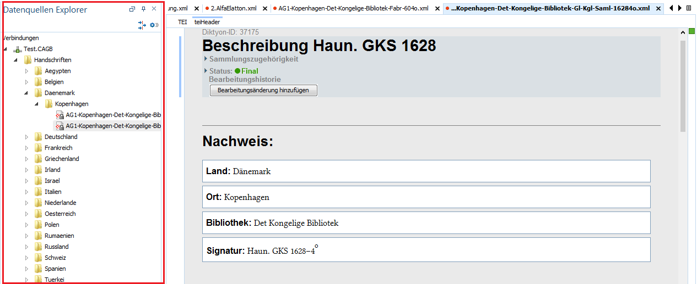

Mit Hilfe des Dateibaums im linken Fenster können Sie Dateien öffnen, neue Dateien erstellen, lokale Dateien hochladen und mehrere Dateien durchsuchen.
Der Dateibaum ähnelt dem Dateibaum des Windowsbetriebssystem und lässt sich auch so ähnlich handhaben. Auf der obersten Ebene befinden sich die Ordner für Handschriftenbeschreibungen und Register.
Die generelle Verzeichnisstruktur sollte so beibehalten werden, da einige Funktionen des Programm auf bestimmte Ordner und Dateien zugreifen müssen.
Dateien können per Doppelklick geöffnet und dann im Textfenster rechts bearbeitet werden. Da es sich um eine zentrale Datenbank handelt, auf die alle Mitarbeiter/-innen der Arbeitstelle zugreifen, darf jede Datei gleichzeitig nur von einem Berarbeiter geöffnet werden. Ist eine Datei bereits von einem Nutzer geöffnet, erscheint ein kleines Hängeschloßsymbol an der entsprechenden Datei. Versucht man die Datei dennoch zu öffnen, erscheint ein Warnhinweis, der zum Abbrechen des Vorgangs auffordert. Bitte beachten Sie diese Warnung und brechen sie den Vorgang ab.
Dateien können auch mit heruntergedrückter linker Maustaste in andere Ordner verschoben werden.
Um im Dateibaum weitere Aktionen (z.B. neue Datei anlegen) durchzuführen, muss per rechter Mausklick auf eine Datei bzw. ein Verzeichnis das Kontextmenü aufgerufen werden.